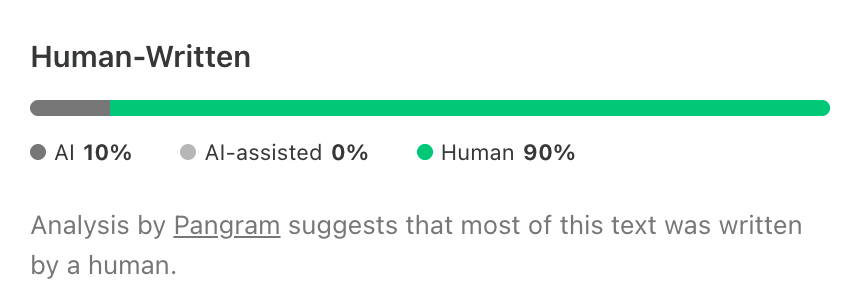

Addy Osmani · Claude Code 团队（Anthropic） · 2026-11-08
Your coding agents made you a manager你的编码智能体，把你变成了管理者
60 秒速览：这篇文章在说什么
译者所加，不是原文的一部分 —— 读完这 7 条，再看原文会快很多。
- 一句话结论：整天跟编码智能体打交道的人，其实已经在做管理。把「管理」当成一套可以练的技能，比把它当成一个职位更有用。
- 为什么先读第一节：作者说各节按影响力排序。第一个习惯最狠——给智能体一个能跑出 pass/fail 的验证机制；否则「看起来做完了」就是它唯一的验证，而你就变成了它的测试套件。
- 结构：12 个小节，每节都是「最佳实践 + 反模式 + 为什么」。前六节讲怎么把一次协作做对（验证、上下文、纠正复利、少用硬约束、先计划、早纠偏）；后六节讲怎么把「不需要你」的运行设计出来（判断不外派、无人值守五问、扩验证不扩注意力、决定不做什么、类比失效、你不需要头衔）。
- 最反直觉的两条：一是少用强制——prompt、CLAUDE.md、技能是「请求」，钩子、拒绝规则才是「要求」，把偏好写成全大写规则就是新的微管理；二是「两次纠正失败就重开」，第三次纠正基本只是往上下文里堆垃圾。
- 三个关键词：编排税（作者自造，每多一个智能体，要的注意力比上一个更多）、认知投降（借自沃顿研究：照单接受 AI 的答案，还更自信）、代码盖章（作者自造：tests are green 就批一份大 diff）。
- 作者自己的量级：大多数日子跑四五个后台智能体加几个本地会话，有些天已经嫌多；
/batch会把一个大改动切成 5 到 30 个任务；沃顿那项研究里，参与者大多数时候接受了 AI 的错误答案（正文语，具体比例见延伸阅读 L2）。 - 类比失效的地方（第 11 节列了七条）：管人更难且技能不会反向迁移、返工几乎免费、智能体没有经验只有笔记本、又积极又自信、只有一种类型且随模型变、新人的练习机会还得你造；最后一条是别把人的团队挤掉了。
常见直觉：智能体 = 更快的初级工程师
- prompt 写得好，产出自然就好
- 让它多写，产出自然多
- 它说做完了，就是做完了
- 有空就多开几个会话
- 出错就再纠正一次
本文：它需要被管理，但不是人
- 关键不一定是 prompt 技巧，而是 brief：目标、约束、验收标准
- 吞吐上限在审查与验证，不在生成
- 「看起来做完了」不算证据，要有能跑出 pass/fail 的检查
- 数量受「编排税」限制：每多一个，要的注意力比上一个更多
- 两次纠正失败就重开，别叠第三次
这张对比卡是译者按正文归纳的，不是原文的表格。原文更强调「管理」是借来的类比，用它的同时要记住它在哪几处不成立。
读法建议：先看第一节（验证机制）和第七节（可以派活、不能派判断）——这两节最容易被忽略又最贵；其余各节可以当检查表，用的时候再回来对。
作者的主张可以压成一句：管理智能体的技能，差不多就是管理团队的技能，而且你不必先有经理头衔。这篇把它拆成 12 个可执行的习惯，每个都配一条反模式和一句「为什么」。
The skills for managing agents are pretty much the skills for managing a team, and you don't need to be a manager to learn them.
管理智能体所需的技能，基本就是管理一支团队所需的技能——而且你不需要有经理头衔才能学它。
If you're spending all day with a coding agent, you are managing. You're repeatedly selecting tasks, writing instructions, delegating, following up, evaluating results, and deciding what ships. The engineers who get the most out of agents aren't necessarily the ones who are best at prompt engineering. They're the ones who learned how to manage, intentionally or otherwise.
如果你整天都在跟一个编码智能体打交道，那你就是在做管理。你在反复地挑任务、写指令、分派、跟进、评估结果，并决定哪些东西能上线。把智能体用得最好的工程师，不一定是提示词写得最漂亮的那批人。而是学会了怎么做管理的人——不管是有意还是无意。
This might be an unwelcome idea. Many of the engineers I admire took an individual contributor (IC) career path because they want to stay close to the work. They've seen friends become managers and disappear into their calendars. But I'm not telling you to become a manager like that. I'm using "management" in a specific sense: producing good outcomes by enabling others' work. And I'm certainly not saying agents are a substitute for managers or colleagues.
这个说法可能不太受欢迎。我欣赏的很多工程师走的是个人贡献者（IC）这条路，因为他们想离具体工作近一点。他们见过朋友当上经理之后，整个人消失在日历里。但我不是让你去当那种经理。我说的「管理」是一个特定含义：通过让别人把活干成，来产出好结果。我也绝不是说智能体能替代经理或同事。
Every gripe you have about bad managers is a bug report for interacting with agents. Think about handoffs. If you’ve experienced a bad one you may have got an ask that felt vague, lacked context or just had expectations shift a lot. The good news for ICs is that since you’ve been on the receiving end of handoffs for years, you might know what a good one looks like.
你对糟糕经理的每一条抱怨，都是一份「怎么跟智能体打交道」的 bug 报告。想想「交接」这件事。如果你经历过一次糟糕的交接，你大概收到过一个含糊的任务：缺上下文，或者期望值就是一直在变。对个人贡献者来说，好消息是：你已经在「交接的接收端」待了很多年，所以你可能知道一次好的交接长什么样。
I've written before that your coding agents need a manager. I've also written about the quiet risk of delegation, cognitive surrender. This piece compares good engineering managers' practices with what we've learned from using and creating Claude Code. The sections are roughly ordered by impact, so that the most high-leverage habit comes first.
我以前写过，你的编码智能体需要一个经理。我也写过委派这件事的隐性风险：认知投降。这篇把优秀工程经理的做法，跟我们在使用和开发 Claude Code 过程中学到的东西放在一起比较。各节大致按影响力排序，最省力见效的那个习惯放在最前面。
Give it a way to check its work给它一个能验证工作的机制
这一节的核心：把「看起来做完了」换成「有证据地做完了」。验证机制只需要能给出 yes/no，而跑验证的那条命令，是你能写进 CLAUDE.md 的最有用的一行。
Best practice: Provide the agent with a mechanism to validate its work, like a test suite, build, or screenshot, and have it show you the results as proof.
最佳实践：给智能体一个能验证自己工作的机制，比如测试套件、构建，或者截图，并让它把结果拿给你当证据。
Anti-pattern: Taking "looks done" as confirmation. This forces you to do all the validation, becoming the agent's test suite.
反模式：把「看起来做完了」当成确认。这会逼着你承担全部验证工作，你就变成了智能体的测试套件。
Ask an experienced manager how they can be confident their team is producing good work without reading everything, and they'll talk about guardrails. CI, code review, dashboards, on-call, etc. Inexperienced managers who don't build guardrails end up validating everything themselves, and within a quarter they're the bottleneck. The same is true for agents. As the Claude Code best-practices guide explains, agents stop when the work looks done. If there's no validation, "looks done" is the only validation the agent has. Providing a mechanism to validate the work allows the agent to do the work, run the validator, see the failure, and correct it on its own. For a UI change, this can mean actually opening the page in a browser and iterating until it works and looks good.
你去问一个有经验的经理：不逐条看，怎么确信团队产出是好的？他会跟你聊护栏。持续集成（CI）、代码审查、监控仪表盘、值班，诸如此类。没建护栏的新手经理最终什么都要自己验一遍，一个季度之内就成了瓶颈。智能体这边是一样的。正如Claude Code 最佳实践指南所说，智能体在「活看起来干完了」的时候就停下。如果没有验证机制，「看起来做完了」就是智能体唯一的验证。给它一个验证机制，它就能自己干活、跑验证、看到失败、然后自己改对。如果是 UI 改动，这就意味着真的在浏览器里打开页面，一轮轮调到能用、好看为止。
The validation mechanism can be almost anything, as long as it's something that yields a definitive pass/fail result. Think tests, build exit codes, linters, diff scripts, and screenshots. The guide notes that the command that runs these validations is the single most useful line you can have in your CLAUDE.md, the instructions file the agent starts each session with. Once you have the validation mechanism, here are some ways you can bring it into your workflow:
验证机制几乎可以是任何东西，只要能给出明确的通过/不通过结果。比如测试、构建退出码、linter、diff（差异）脚本、截图。指南里提到：跑这些验证的那条命令，是你能在 CLAUDE.md 里写的最有用的一行——CLAUDE.md 就是智能体每次开启会话时会先读的指令文件。有了验证机制之后，有几种把它接进工作流的做法：
- Ask. "Run the auth tests after, and continue until they pass."
- Set a goal. With /goal, a separate model runs a condition check after every turn, which is most useful when doing long background work.1
- Enforce. A Stop hook can prevent the turn from completing until the typecheck passes.
- Have it reviewed. /code-review sends the diff to a new subagent (which didn't see your conversation) for review, like how authors don't approve their own PRs.
- 直接用嘴说。「改完跑一遍 auth 测试，不过就一直改到过。」
- 设一个目标。用 /goal 时，每个回合结束后会有另一个模型来检查条件是否满足——做长时间后台任务时最有用。1
- 强制。Stop 钩子可以让回合在类型检查通过之前一直无法结束。
- 让它被审一遍。/code-review 会把差异发给一个新的子智能体来做审查（它没见过你的对话），就像作者不给自己批 PR（向代码平台提交一次改动、请人审阅后合并）一样。
You can even control the scope of the review. If you ask it to find problems, it will always find something. But if you ask it to find correctness issues and ignore style, it will do that. This is how good managers learn to ask for feedback, as well. Most of the functionality in the Claude Code toolkit is all about tightening this loop. Skills, hooks, subagents, and MCP all exist to bridge the gap between doing the work and validating the work, so your focus is only on the things the agent couldn't validate. This is what experienced engineering managers do.
你甚至可以控制审查的范围。如果你让它「找问题」，它总能找出点什么。但如果你让它只找正确性问题、忽略风格，它也会照做。好的经理也是这样学会要反馈的。Claude Code 这套工具里的大部分功能，都是在把「干活—验证」这个循环拧得更紧。技能、钩子、子智能体、MCP，都是用来补上「干活」和「验证」之间的那道缝，这样你的注意力只需要放在智能体验不了的那部分。有经验的工程经理，干的就是这件事。
Set clear context把上下文交代清楚
好 brief 不是写得长，而是只写仓库里没有的东西：目标、为什么重要、约束、不做什么、怎么验收。文中拿「让仪表盘变快」示范了怎么把它改写成 prompt。
Best practice: Provide a clear summary of what the agent can't know by inspecting the repo, including: the task's objective and why it's important, constraints, out-of-scope items, and success criteria.
最佳实践：把智能体靠翻仓库看不出、又必须知道的信息，清楚地概括给它：任务目标以及它为什么重要、约束、不在范围内的东西、以及验收标准。
Anti-pattern: Passing a one-line task, while the real expectations live in your head, or padding the brief with things the agent would discover by reading the code.
反模式：丢过去一句话的任务，真正的期望全在你脑子里；或者反过来，把智能体读代码就能知道的东西全塞进 brief。
Effective managers provide clear descriptions of the desired outcome, constraints, and objectives. They articulate what the work should accomplish, but give the person doing the work the freedom to figure out how to do it. In the military, they call it commander's intent. At Netflix, they call it "context, not control."
有效的经理会把想要的结果、约束和目标讲清楚。他们说清「这件事要达成什么」，但把「怎么做」的自由留给干活的人。军队里把这叫「指挥官意图」。Netflix 的说法是「给上下文，别给控制」。
The challenge of working with agents is that it's hard to know what context the agent is missing. The first thing a coding agent does on every task is read your code. Current models are fantastic at picking up on your folder structure, conventions, and test set-up much faster than you could describe them.
跟智能体协作的难点在于：你很难知道它缺了哪块上下文。编码智能体接到每个任务，第一件事都是读你的代码。现在的模型很擅长自己从目录结构、约定和测试配置里读出规律，比你口头描述快得多。
Before you write anything down, think about what the agent can figure out on its own. If the agent can read it in your code, and it would actually go read it, you don't need to say anything. Spend your words on the parts that are not in the repo - e.g. a meeting decision, someone's internal process for deploying, why this task is important, and what it means to be done this time.
在动手写之前，先想想哪些东西智能体自己能搞清楚。凡是它读代码就能读到、而且它真的会去读的，你一个字都不用写。把话花在仓库里没有的部分上——比如某次会议的决定、某个人内部的部署流程、这个任务为什么重要、以及这次「做完」具体指什么。
Let's take the example of a vague task, "make the dashboard faster", and turn it into a prompt. The numbers here are just for example.
拿一个模糊任务当例子：把「让仪表盘变快」写成一个 prompt。这里的数字只是举例。
示例：把「让 dashboard 变快」写成一个 prompt（英文原文，不译）目标、为什么、约束、不做什么、怎么验证——五行正好对应这一节开头那条最佳实践。
Get p95 load time for the /team dashboard under 2s for orgs with 10k+ members. Why: enterprise admins open it daily, and slow loads are their top support ticket. Constraints: no schema changes; keep the API response shape. Out of scope: UI changes; caching the whole page. Check: run scripts/perf/team.sh and show before and after numbers.
You don't need to do this for every task. If you're doing discovery work, it's totally fine to write a generic prompt. You'll just refine a little more as you go. If you're not ready to write a prompt, have the agent interview you until it could write the spec, save that spec to a file, and then start a new session with the agent to build from that. You can use that spec to review against later.
不是每个任务都要这么写。如果是在探索阶段，写个泛泛的 prompt 完全没问题。边做边再磨细一点就行。如果你还没想清楚怎么写，就让智能体反过来采访你，直到它能替你写出这份 spec；把 spec 存成文件，再开一个新的会话来照着它实现。这份 spec 之后还能拿来当审查的标准。
You might also need to give your agent access to other tools, like your issue tracker, error dashboard, or team chat. Treat your agent the same way you'd treat a new hire on your team. If it's a CLI tool it already knows about, like gh, you often won't need to tell it anything.
你可能还需要给智能体开放别的工具，比如 issue 跟踪、错误仪表盘或者团队聊天。把智能体当成团队里的新同事来对待。如果是它本来就熟的命令行工具（比如 gh），你通常什么都不用交代。
Make every correction compound让每次纠正都复利
同一件事纠正两次，就该从「口头纠正」升级成「写下来的规则」：CLAUDE.md 或一个共享技能。这一节还列了适合写进去的四类内容。
Best practice: When you correct the same thing more than once, document it in the team's CLAUDE.md or turn it into a shared skill. Over time, check if newer models reduce the need for these corrections.
最佳实践：同一件事你纠正了不止一次，就把它写进团队的 CLAUDE.md，或者做成一个共享技能。过一段时间回来看看：新模型是不是让这些纠正变少了。
Anti-pattern: Manually correcting the same thing every session or relying on tacit knowledge that only exists on your own machine.
反模式：每次会话都手工纠正同一件事，或者依赖只存在于你本机上的隐性知识。
Teams that maximize the value of CLAUDE.md update it semi often and write down lessons learned from mistakes worth preventing. Some teams even mention @claude in code reviews, turning feedback into a permanent policy. Keep CLAUDE.md concise. Here are the types of things that belong in it:
把 CLAUDE.md 用出价值的团队，会隔一阵子就更新它，把「值得防住的错误」里学到的教训写下来。有些团队甚至会在代码审查里 @claude，把一次反馈变成长期策略。CLAUDE.md 要保持简短。适合写进去的东西有这么几类：
- How to verify something (exact commands)
- Misleading areas of the code
- Decisions that don't exist in the repo
- Anything you've corrected twice
- 怎么验证某个东西（具体命令）
- 代码里容易误导人的地方
- 不写在仓库里的那些决定
- 任何你纠正过两次的事
These are all examples of the compounding nature of written information. It outlasts people changing teams and models getting replaced.
这些都是「写下来的信息会复利」的例子。它的寿命比人员换团队、比模型被替换都长。
Let it decide, and enforce only what can't bend让它自己决定，只强制那些不能弯的事
这一节给了一条特别清楚的界线：prompt、CLAUDE.md、技能是「请求」，模型可以权衡；钩子、拒绝规则、托管设置是「要求」，永远执行。判断标准只有一条——这件事是不是「必须永远做或永远不做」。
Best practice: Let the agent decide by default and only use hard enforcement (e.g. hooks, deny rules) for the few things that must always or never happen.
最佳实践：默认让智能体自己决定，只对极少数「必须永远做／永远不做」的事才用硬性约束（比如钩子、拒绝规则）。
Anti-pattern: You write rules in ALL CAPS, define hooks for optional preferences, or keep habits from older models long after newer models outgrew them.
反模式：用全大写字母写规则、为可有可无的偏好定义钩子，或者在新模型早就不需要之后还留着旧模型的习惯。
Andy Grove's High Output Management describes this as task-relevant maturity: the level of supervision should depend on a person's history of performance in that specific task, not their overall capability.2
Andy Grove 在《高产出管理》里把这叫「任务相关成熟度」：监督的力度应该取决于这个人在「这件具体任务」上的历史表现，而不是他的总体能力。2
An old piece of advice for new managers says the same thing: give people a little more latitude than you're comfortable with while backing them up and holding them accountable.
给新经理的一条老建议说的是同一件事：给别人比你舒服的程度再多一点自由，同时给他支持、也让他担责。
Claude Code takes this and makes it explicit: prompts, CLAUDE.md, and skills are requests that the model can consider and choose to act on; hooks, deny rules, and managed settings are requirements that are always enforced. In most cases, you want the agent to make the call. There are often cases where the model, looking at real code, is better placed to judge if a guideline applies than a rule you set ahead of time. Use enforcement to set hard requirements such as "never edit the generated client" or "always run the license-header script." In particular, new terminal and VS Code sessions start in auto mode, with a classifier that will filter out unsafe behaviors like deploying to production or force pushing over someone's work.
Claude Code 把这一点显式化了：prompt、CLAUDE.md 和技能是「请求」，模型可以自己权衡要不要照做；钩子、拒绝规则和托管设置是「要求」，永远强制执行。大多数情况下，你希望智能体自己来判断。常常是这样：模型看着真实代码，比你事先定的一条规则更能判断这条准则适不适用。硬性要求才用强制，比如「永远不要手改生成的 client」「永远先跑 license-header 脚本」。另外，新的终端会话和 VS Code 会话默认从 auto 模式开始，里面有个分类器会拦掉不安全的行为，比如往生产环境部署、或者强推覆盖别人的工作。
The guide's advice has two sides. If you're putting more emphasis on a CLAUDE.md line and the agent still isn't picking it up, it should be a hook. If a hook is expressing a preference instead of a requirement, it should be removed in favor of letting the agent call the shots. It's like your team deciding to retire a process that is no longer useful. This also means adjusting when you have a new model. The guide keeps a list of habits you can stop: ALL CAPS directions, "think harder" (effort is a setting now), and "don't be lazy." With current models, these tend to lead to over-enforced rules and overwork. With agents, over-process is the new micromanagement.
指南的建议有两个方向。如果某条 CLAUDE.md 你已经反复强调、智能体还是不听，那它就该变成钩子。反过来，如果一个钩子表达的只是偏好而不是要求，就该删掉它，让智能体自己拍板。这就像团队决定退役一个不再有用的流程。这也意味着换新模型时要重新调。指南里列了一份可以停掉的习惯清单：全大写的指令、「想得更深一点」（现在努力程度是个设置项）、以及「别偷懒」。对现在的模型，这些东西往往会变成过度强制的规则和过度劳作。在智能体这儿，过度流程就是微管理的新版本。
Plan before it builds先定计划，再让它动手
计划模式 + 一次「像资深工程师那样读计划」的设计评审，是发现方向跑偏最便宜的地方。任务拆分可以交给 /batch，但你仍要检查切出来的块有没有重叠。
Best practice: Set an agreed-upon plan before the agent starts coding, read for underlying assumptions, and partition tasks into non-overlapping parallel work.
最佳实践：在智能体动手写代码之前，先把计划谈定；读的时候留意底层的假设；再把任务切成互不重叠、可以并行的几块。
Anti-pattern: Allowing multiple agents to tackle overlapping tasks simultaneously, then spending the afternoon resolving merge conflicts and duplicated decisions.
反模式：放几个智能体同时啃有重叠的任务，结果一下午都在解合并冲突、收拾重复做的决定。
A good workflow here is to first enter plan mode and iterate on your plan until you have the right one, then delegate the coding. With a good plan, the model can often build it all in a single pass. For larger tasks, use a second session to look through the plan as a staff engineer would; it's a design review, which is the cheapest place to catch a wrong turn. When reviewing the plan, look for underlying assumptions (in a 1:1 this would be asking, "What are you unsure about?").
这里的好流程是：先进入计划模式，把计划反复改到对为止，然后再把写代码派出去。计划足够好，模型常常一遍就能写完。任务大一点，就再开一个会话，让它像资深工程师那样把计划过一遍——这是一次设计评审，也是发现方向跑偏最便宜的地方。看计划的时候重点找底层假设（如果是一对一沟通，这等于问一句：「你哪里不确定？」）。
Decomposition is increasingly being delegated to agents. /batch in Claude Code takes a big mechanical change and creates 5 to 30 tasks, displays the plan, executes them in separate worktrees (separate checkouts of the repo), and creates a PR for each one. You no longer need to divide up the work, just check the slices for overlap and make sure shared interfaces land first. Without this, you might get a false level of parallelism. Five agents taking on overlapping tasks won't lead to five times the output, it leads to one merge conflict with five authors.
任务拆分也越来越多地交给智能体。/batch 会拿一个大而机械的改动，切出 5 到 30 个任务，先把计划显示出来，然后在各自的工作树（同一仓库的独立检出）里执行，每个任务开一个 PR。你不用再自己切活了，只需要检查切出来的块有没有重叠，并确保共享接口先落地。不这么做，你得到的可能是一种假的并行。五个智能体啃一堆有重叠的任务，不会带来五倍产出，只会带来一个「有五个作者」的合并冲突。
Steer early, reset fast早点纠偏，快速重开
两次纠正失败就换新会话、重写 prompt——第三次纠正基本只是往上下文里堆垃圾。而便宜的回退（/rewind）让「先试一个更大胆的方案」变成低风险选择。
Best practice: Watch the first minute and steer the agent. As soon as you see it go off course, correct. If you've already made two failed attempts to correct the agent, start anew with a fresh session and better prompt.
最佳实践：头一分钟盯着，及时纠偏。一看到它跑偏，马上纠正。如果你已经纠正失败两次，就换一个新会话、写一个更好的 prompt，重新开始。
Anti-pattern: Adding a third or fourth attempt to correct the agent, instead of correcting the request.
反模式：第三次、第四次继续去纠正智能体，而不是回去纠正你提的那个需求。
An experienced manager knows that if a capable person has a miss multiple times, the problem might be upstream with the instructions, context or scope. The agent version is explicit: as soon as the agent goes off course, hit Esc. If you've already made two failed attempts to correct the agent, clear the session and write a better prompt, incorporating the lessons you learned. A third attempt to correct the agent is mostly just more information that the model has to keep re-reading and re-processing (including failed attempts).
有经验的经理知道：一个有能力的下属连着搞错几次，问题可能出在上游——指令、上下文或者范围。放到智能体身上很明确：它一跑偏，就按 Esc。如果已经纠正失败两次，就清掉会话，把学到的教训写进一个更好的 prompt 再重来。第三次纠正，基本上只是又往上下文里塞了一堆模型要反复重读、重处理的信息（包括失败的那几次）。
Cheap rollback is also changing the game. /rewind rolls the code and conversation to an earlier point, making it low-risk to try a more ambitious approach first. Good managers do the same with employees: if undoing a mistake is cheap, let them try an ambitious approach. Then run the retro afterwards, and generalize the fix into CLAUDE.md if applicable.
便宜的回退也在改变玩法。/rewind 能把代码和对话一起退回到之前某个点，所以先试一个更大胆的方案，风险很低。好的经理对下属也是这样：如果撤销错误很便宜，就让他们先试大胆的做法。做完之后再复盘，能通用的修法就写进 CLAUDE.md。
Delegate the task, never the judgment可以派活，不能派判断
作者讲了亲历的一次翻车：把活派出去，差点把决定权也一起派出去。人守的是外层循环——约束、你实际读多少、留什么证据、哪些必须有人签字。
Best practice: The agent does the work, you decide the important things: product calls, security boundaries, what ships. Treat every diff like you're going to get paged for it.
最佳实践：活让智能体干，重要的决定由你来做：产品取舍、安全边界、什么东西上线。把每一份差异都当成「出事会把你叫起来」的那种改动来对待。
Anti-pattern: Approving large diffs because the tests are green and the names look reasonable. This is not code review, this is code ratification.
反模式：因为测试是绿的、命名看起来也合理，就批了一份大 diff。这不叫代码审查，这叫给代码盖章。
No manager can say "my report shipped that, not me." The same is true for every agent you run. I've fallen into this trap myself. I told an agent to research gaps with competitors and write local PRs to close those gaps. I read the research, skimmed the code and almost went ahead and pushed changes that added complexity for users for little gain. I had delegated the work, and almost delegated the decision as well. It's an easy trap to fall into: it's a 600-line diff, the names look reasonable, the tests are green, approve.
没有哪个经理能说「那是我下属上线的，不是我」。——你跑的每一个智能体也一样。我自己就掉进过这个坑。我让一个智能体去研究我们和竞品的差距，然后在本地仓库准备好 PR，把这些差距补上。我读了研究报告、扫了一眼代码，差点就顺手推出去——而那个改动给用户添了复杂度，收益却很小。我把活派出去了，还差点把决定权也一起派出去。这个坑太好掉了：600 行的 diff，命名看着还行，测试是绿的，批吧。
It makes sense to split tasks this way: let agents do the style, linting, follow-ups to reviews, typical bugs and unit testing, but let humans handle security boundaries, compliance and product decisions.
这样分工是合理的：风格、lint、审查后的跟进、常见 bug 和单元测试交给智能体；安全边界、合规和产品决策交给人。
Coordination works the same way. An agent can keep track of handoffs, but deciding between competing requests and getting people to actually commit is still a human job.
协调也是一样。智能体可以帮你盯交接，但在几个互相竞争的需求之间做取舍、并让人真的承诺下来，仍然是人的活。
You don't need to be in the inner loop of every change. What you do need to own are the outer loops: what the constraints are, how much of the output you actually read, what evidence you keep, and what a human has to sign off on. And keep changes small, since the unit of review is the unit of comprehension.
你不需要待在每个改动的内层循环里。你要负责的是外层循环：约束是什么、产出你实际会读多少、留什么证据、哪些必须有人签字。并且让改动保持小——因为审查的单位就是理解的单位。
Design the run that doesn't need you设计一条不需要你的运行
无人值守之前先回答五个问题：它知道「做完」长什么样吗、有自我验证吗、边界在哪、护栏是什么、产出在哪谁批。再补两个管理习惯：先试点，先盯头几次。
Best practice: Before deploying an autonomous task, define done, the self-verification, the boundaries, the guardrails, and the human approval.
最佳实践：在放一个自主任务出去之前，把「怎样算做完」、自我验证、边界、护栏和人工批准都定清楚。
Anti-pattern: Starting a long-running process before bed, without a definition of done or a stopping point, and waking up the next morning to find out that your model has been working overnight on a faulty premise.
反模式：睡前起一个长时间跑的进程，既没定义「做完」也没设停止点，第二天醒来发现模型整夜都在一个错误的前提上干活。
Skip-level managers don't manage the work of individual engineers; they manage the work of goals, guardrails, checkpoints, and leads.3 AI agents are following a similar trajectory. They are already delegating parts of a task to sub-agents, and they can run autonomously on schedules, after CI failures or after new pull requests are opened. The frontier is self-governing systems that can autonomously start, self-verify, and only call for human intervention when decisions are needed.
跨级管理者（跳过直接下属、去管下一层的人）不管某个工程师具体写什么；他们管的是目标、护栏、检查点，以及各位组长。3AI 智能体走的是相似的轨迹。它们已经在把任务拆一部分给子智能体；也能按计划自主运行，或者在 CI 失败后、有新 PR 打开后自己跑起来。前沿是自治系统：能自己启动、自己验证，只在需要做决定的时候才叫人。
The role shifts from controlling the session to designing your loops. The five questions to ask yourself when designing an unattended run are the same questions a good manager asks before giving a senior engineer a project and going on vacation:
角色从「控制这一次会话」变成「设计你的循环」。设计一次无人值守的运行时要问的五个问题，跟一个好经理把项目交给资深工程师、然后自己去休假之前问的问题，是一样的：
- Does it know what done looks like? (Goal condition, spec file, or a failing test it has to turn green.)
- Does it have a self-verification mechanism? (Test suite, Stop hook, or review step.)
- What are its boundaries? (Permission controls, sandbox, worktree, or the one branch it's allowed to push to.)
- What are its guardrails? (Turn limit or spend limit.)
- Where does it produce output, and who approves it? (A PR or summary, and a human approval of any non-reversible actions.)
- 它知道「做完」长什么样吗？（目标条件、spec 文件，或者一个必须转绿的失败测试。）
- 它有自我验证的机制吗？（测试套件、Stop 钩子，或者一道审查。）
- 它的边界在哪？（权限控制、沙箱、工作树，或者只允许推的那一个分支。）
- 它的护栏是什么？（回合上限，或者花费上限。）
- 它在哪儿产出，谁来批？（一个 PR 或一份总结；以及任何不可逆的动作都要有人批。）
The guide has two more habits that managers will recognize as good practices: pilot, i.e., get a batch job to run on three files, iterate the prompt, then run the rest; and watch the first few runs of anything new before you trust it unattended. Think of it as a probation period.
指南里还有两个习惯，做管理的会认出来这是好做法：先试点——让批处理先跑三个文件，把 prompt 磨一磨，再跑剩下的；以及任何新东西先盯着头几次运行，再放心让它无人值守。把它当成试用期。
Scale verification, not attention扩验证，别扩注意力
「编排税」：过掉最初几个智能体之后，每多一个，要的注意力都比上一个更多。扩数量只能靠「需要盯得更少」，不能靠「盯得更多」；指标要量系统，不是量活动量。
Best practice: Scale up the use of agents only as fast as checks, goals and fresh reviewers can take over the watching, and measure quality in addition to throughput.
最佳实践：只有当检查、目标和带全新上下文的审查者（没见过你这次对话的人）能替你盯住时，才继续加智能体；而且除了吞吐量，也要看质量。
Anti-pattern: Opening more sessions than you can review well, and measuring success by how much code the AI wrote.
反模式：开的会话多到自己审不过来，还用「AI 写了多少代码」来衡量成功。
Managers learn their span of control pretty quickly. Past a certain number of direct reports, everyone gets less of the manager and the quality goes down. The same is true for agents. It's what I call the orchestration tax: Past the first few agents, each additional agent requires more of your attention than the last. Most days I run four or five background agents and a few local sessions, and some days that's too many.
经理很快就摸清自己的管理幅度。直接汇报的人超过某个数，每个人分到的经理就更少，质量也就下来了。智能体也是一样。我把它叫「编排税」：过掉最初几个智能体之后，每多一个，要求的注意力都比上一个更多。大多数日子我同时跑四五个后台智能体，加几个本地会话；有些天这已经太多了。
Managing lots of sessions isn't about being super-focused, it's about delegating most of the monitoring to self-evaluation, goals and new-context reviewers and reserving attention for decisions. It also helps to have notifications instead of polling and a centralized view of the background jobs. You can't scale the number of agents by monitoring more, only by needing to monitor less. Then measure the system rather than the activity. Useful metrics include cycle time for PRs, ramp up time for new employees and the frequency of reverts or rework. Measuring the percentage of AI-written code isn't a useful goal, because what you're aiming for is quality and reliability. Grove's rule of measuring with a countermeasure applies here: If you measure the number of PRs merged, then also measure reverts and rework.
管很多会话靠的不是超强专注，而是把大部分盯梢工作交给自我评估、目标和全新上下文的审查者，把注意力留给决定。另外也有帮助的是：用通知代替轮询，以及有一个统一的地方看后台任务。想扩智能体的数量，不能靠「监看得更多」，只能靠「需要监看得更少」。然后，量系统，而不是量活动量。有用的指标包括 PR 的周期时间、新人上手时间，以及撤销或返工的频次。「AI 写了多少比例的代码」不是个有用的目标，因为你要的是质量和可靠性。Grove 那条「测量要配一个反制测量」的规则在这儿适用：如果你量合并了多少 PR，就同时量撤销和返工。
Decide what not to build决定什么不做
做起来便宜之后，稀缺资源就变成了审查和验证。所以那些老掉牙的管理问题反而更值钱：谁要的、怎么算成功、什么时候停。
Best practice: Ask who needs it, how you'll know it worked and what would make you stop, and limit WIP.
最佳实践：先问「谁需要它」「怎么知道它成了」「什么情况下就停」，并且限制在制品数量。
Anti-pattern: Just throwing every plausible idea into a PR; after all it's cheap to build. You'll now have a junk drawer the team needs to review, secure and maintain.
反模式：反正做起来便宜，就把每个看起来靠谱的想法都扔进一个 PR。结果你多了一个杂物抽屉，团队还得去审它、加固它、维护它。
The most important word a manager says is often "no." With agents, it's harder to say no. It's nearly free to start work and you can throw any plausible idea into a PR by lunch. But you'll now have a bunch of PRs that the team needs to review, secure, support and maintain. Review and validation are the scarce resources now.
经理说出口的最重要的一个词，常常是「不」。到了智能体这儿，「不」反而更难说。开工几乎不要钱，午饭前就能把任何看着靠谱的想法变成 PR。但你手上会多出一堆 PR，团队得审、得加固、得支持、得养着。现在稀缺的是审查和验证。
In fact, the old management questions matter now more than they used to. Who asked for it? How do we measure success? How do we know when to stop? If it's cheap to build the hard question is not "can we?" but "should we?"
实际上，那些老掉牙的管理问题，现在比以前更重要。谁要的？怎么衡量成功？怎么知道该停了？如果做起来便宜，那难的问题就不是「能不能做」，而是「该不该做」。
Where the analogy breaks类比在哪里失效
六条差异，全是「智能体不是初级工程师」的理由：管人更难、返工几乎免费、没有经验只有笔记本、又积极又自信、只有一种类型、新人的练习机会还得你造。
Best practice: Follow management best practices, but account for the differences in the agent model, like cheap rework, how quick they are to agree, and strengths that shift with every model release.
最佳实践：照着管理的最佳实践做，但要考虑智能体这种「模型」和人的差异：返工几乎免费、答应得特别快、长处会随每次模型发布而变。
Anti-pattern: Thinking that an agent is just like a junior developer, or that you're prepared to manage five people because you can run five agents.
反模式：觉得智能体就是个初级工程师；或者觉得自己能管五个智能体，就等于能管五个人。
The analogy is a useful but imperfect one, and the best practitioners of this work are aware of where it is imperfect:
这个类比有用但不完美，这件事做得最好的人清楚它哪里不成立：
- Managing people is harder, and the skills don't transfer back. You're not prepared to manage five people because you've run five agents. There is no equivalent for motivation, conflict, career development, or months-long trust building.
- Rework is almost free. You can ask an agent things you would never ask of a person. If a technical debate happens at the whiteboard, the agent can build two or three options and you can compare them.
- Agents don't have experience, just a notebook. Auto memory only records notes on one machine. They don't transfer to your teammates' sessions. They aren't the experience and judgment you develop over the course of your career, and you need to write those lessons down for the whole team.
- Agents are eager and confident. If you ask a good engineer to do something wrong, they push back. Agents are more likely to do what you ask, and you're likely to overtrust them. In Wharton research on cognitive surrender, participants accepted faulty AI answers most of the time, and grew more confident.4 You can counter the overconfidence by asking the agent to argue against its own answer.
- You only have one agent archetype, and it changes every few months. Human teams have diverse skills and strengths. All your agents have the same strengths and weaknesses, which shift with each model release.
- You still have to train your junior devs. When agents take over the starter work junior devs need to learn the fundamentals of the craft, you have to create those reps intentionally as a manager.
- The human team still matters. Sometimes you can spend a day managing agents without realizing that you've crowded out the time it takes to build a cohesive team. Don't do this.
- 管人更难，而且技能不会反向迁移。跑过五个智能体，不等于你准备好管五个人了。激励、冲突、职业发展、花几个月建立的信任——这些都没有对应物。
- 返工几乎不要钱。有些事你绝不会让一个人去做，但可以让智能体做。白板上争不出结果的技术讨论，可以让智能体做两三个方案出来，你放在一起比。
- 智能体没有经验，只有笔记本。自动记忆只把笔记记在一台机器上。它们不会同步到你同事的会话里。它们也不是你在整个职业生涯里长出来的经验和判断力；那些教训你得自己写下来，给整个团队看。
- 智能体又积极又自信。你让一个优秀工程师做一件错事，他会顶回来。智能体更可能照你说的做，而你也更容易过度信任它。沃顿那项关于「认知投降」的研究里，参与者大多数时候接受了 AI 给出的错误答案，而且越用越自信。4对付这种过度自信，可以让智能体自己反驳自己的答案。
- 你手上的智能体只有一种类型，而且几个月就变一次。人的团队技能和长处是多样的。你的所有智能体长处和短板都一样，而且每次模型发布又会变。
- 初级工程师还是得你自己带。当智能体把新人用来打基础的那些入门活接走之后，作为管理者，你得有意识地把这些练习机会造出来。
- 人的团队依然重要。有时候你花一整天管智能体，没意识到已经把「把团队捏合起来」该花的时间挤掉了。别这么干。
You don't need the title你不需要那个头衔
收尾把话收回到个人：资深工程师一直在做的事——写设计文档、给上下文、认真审查、让身边人变好——智能体让每个工程师第一天就能做。最后给了六条可以立刻试的做法。
Best practice: Focus your effort on making good software happen: setting the context, defining done, and reviewing well.
最佳实践：把力气花在「让好软件发生」上：给上下文、定义「做完」、好好审查。
Anti-pattern: Evaluating yourself by lines of code while running under-briefed, unchecked agents.
反模式：一边跑着没交代清楚、也没设检查的智能体，一边拿代码行数评价自己。
Good staff engineers have always been like this. They write the design doc. They set the context. They do a thorough review. They make the people around them better. Agents let all engineers do this on day one. They give you a crash course on management. You get feedback in minutes, not quarters. You can undo your own mistakes. The job is becoming less about writing the code and more about being the reason good code gets written.
优秀的资深工程师一直都是这个样子。他们写设计文档。他们给上下文。他们认真做审查。他们让身边的人变得更好。智能体让每个工程师第一天就能做到这些。它们给了你一门管理的速成课。反馈是几分钟来的，不是按季度来的。你可以撤销自己的错误。这份工作越来越不像「写代码」，而更像「成为好代码被写出来的那个原因」。
Nobody's born a great manager (or a great engineer). You build skills the same way you always have, through practice. But with agents, practice is cheap.
没有人天生就是好经理（也没有人天生是好工程师）。技能还是跟以前一样，靠练出来的。但有智能体之后，练的成本很低。
Try these ideas:
可以试试这几条：
- Every task needs a check it can run. Ask for the proof.
- Tell the agent what it can't see and leave out what it can.
- Talk through the plan before writing the code.
- Corrected something twice? Log it in CLAUDE.md. Repeated workflows? Turn them into skills.
- Two failed corrections? Restart and rephrase the prompt.
- Review the diff as if you'll get paged for it.
- 每个任务都要有一个它能自己跑的检查。要它交出证据。
- 只告诉智能体它看不见的东西，它能自己看到的不必说。
- 写代码之前先把计划讲一遍。
- 同一件事纠正了两次？写进 CLAUDE.md。有反复出现的工作流？把它们做成技能。
- 纠正失败两次？重开一个会话，重写 prompt。
- 把这份差异当成「出事会把你叫起来」的那种改动来审。
You don't have to want to be a manager. But the engineers who do well with agents will have learned to manage along the way.5
你不必想当经理。但用智能体用得好的工程师，都会在这一路学会管理。5

出处声明：Pangram 的 AI 检测徽章 这张图不是架构图，也不是示意图，而是作者在文末附上的一张 AI 检测徽章：Pangram 判定本文 90% 出自人手、AI 占 10%。它只说明作者愿意公开这份检测结论，本身不构成文章任何论点的证据。
原文图注：Pangram: Human-Written 90%
这张图怎么看（4 条）
- 顶部大字「Human-Written」是 Pangram 给出的总体判定：这篇文本被判为「人写的」。
- 进度条左侧那一小段深灰约占一成，其余为绿色；绿色部分对应图例里的 Human 90%。
- 三个图例数字要一起看：AI 10%、AI-assisted 0%、Human 90%——「AI 辅助」这一档是 0，不是 10。
- 最下方那句「Analysis by Pangram suggests that most of this text was written by a human.」用的是 suggests（提示），不是「证明」。
一句话：它是作者贴的检测结果，不是文章论点的证据，别把它当论据。
补充材料
下面几块都是译者所加，用来补上原文没展开的部分。正文里的虚线链接、虚线术语、上标数字，都能悬停看卡片；这里给出完整的清单，方便你事后再回头查。
延伸阅读地图
原文 4 处正文引用，指向 4 个不同链接；另有 1 张配图未计入。按「不读会不会误解本文」分成三档：必读 / 背景 / 可选，建议顺序即卡片上标注的数字。每条都写了「不点开也能拿到的重点」，所以你可以完全不跳转地读完这篇文章。
Claude Code 最佳实践
code.claude.com · Best practices for Claude Code
正文对应：Claude Code 最佳实践指南
这是什么：Anthropic 官方文档：把一次会话不顺归成四类原因——缺上下文、没检查、规则靠不住、成本失控，逐条给配置写法。
为什么值得点：补足正文「looks done」这句：文中四档验证（提示、/goal、Stop hook、子智能体审 diff）与 CLAUDE.md 只留验证命令，原文配置都在这一页。
访问说明：直连 200，无需登录；2026-11-09 更新，正文为英文，含可直接抄的 settings.json / SKILL.md 片段。
不点开也能拿到的重点
文档的判断和本文一致：智能体在「看起来做完了」时停下，所以没东西可跑时，你就是它的测试套件。验证强度分四档——写进提示、设成 /goal（每回合由另一个模型判定）、配成 Stop hook（脚本退出码 2 就不许结束这回合）、交给没见过你对话的新子智能体做 /code-review。另一条主线是「确定性 vs 非确定性」：偏好留在 CLAUDE.md 让模型判断，零例外的规则交给 hook、deny 规则与沙箱；CLAUDE.md 宜短，验证命令是它最有价值的一行。
- 四档严格度：提示里写、/goal、Stop hook、新鲜子智能体审 diff，越往后越不依赖模型记性。
- CLAUDE.md 只放仓库里查不到的：验证命令、易误读的旧模式、不在代码里的决策；建议控制在 200 行内，其余交给 .claude/rules/ 与 skills。
- Stop hook 示例是 pnpm tsc --noEmit 1>&2 || exit 2；连续八次拦截后 Claude Code 会放行，上限可用 CLAUDE_CODE_STOP_HOOK_BLOCK_CAP 调。
- 评审必须限定范围：被要求找问题就一定会找到，所以要求只看正确性、跳过风格，避免为不可能的场景加抽象和测试。
你的 AI 编程智能体需要一个管理者
addyosmani.com · Your AI coding agents need a manager
正文对应：你的编码智能体需要一个经理
这是什么：作者 1 月的前作：并行跑多个编程智能体之后，工作重心从写代码变成管理——写清任务、划边界、做验证、异步跟进。
为什么值得点：补足正文第 3 段的「your coding agents need a manager」：本文的管理框架、本地与云端双模式、worktree 边界、WIP 上限，前作都有完整版与作者自述配置。
访问说明：直连 200，无需登录；页脚有作者 O'Reilly 书推广，不影响正文。
不点开也能拿到的重点
核心论点是瓶颈已经从「智能体会不会写代码」变成「能不能同时管好多个」。作者把工作拆成两种模式：本地高介入用于架构、重构与含糊需求；云端异步用于迁移、测试、文档、依赖升级这类边界清晰的任务。约束靠工具落实——git worktree 隔离、一个智能体一个 PR、共享接口先由人做第一个 PR、WIP 上限与 kill criteria 限制并行规模。他说自己稳定跑四五个后台智能体加三五个本地会话，别把 Boris Cherny 的十个会话当入门标准；文末还给了一个循环：计划、派活、异步巡检、验证、有序合并、复盘更新 AGENTS.md。
- 瓶颈从生成代码转向评审与「该不该做」，产出变便宜之后判断力更值钱。
- 两种模式并跑：本地高介入用于架构与口味，云端异步用于清晰可验证的任务。
- 边界用工具落地：worktree 隔离、一个智能体一个 PR、共享接口先做人写的第一个 PR。
- 防过载：WIP 上限加 kill criteria，别照抄十个会话的极端配置。
认知投降
addyosmani.com · Cognitive Surrender
正文对应：认知投降
这是什么：作者 5 月的前作：借 Wharton 论文区分认知卸载与认知投降——前者交出「怎么做」、留下判断，后者连答案都不再自己构造。
为什么值得点：补足正文第 3 段的「cognitive surrender」。本文第 07 节「委托任务而不委托判断」与第 11 节「类比失效之处」，讲的就是这篇里的校准问题与那组实验数据。
访问说明：直连 200，无需登录；正文较长，小标题按「投降出现在哪、理解债、工程师为何更易中招、校准、结构性抵抗」推进。
不点开也能拿到的重点
引用 Shaw 与 Nave 的论文：三个实验、1372 人，只要 AI 可用，73% 的错误答案被直接接受，而且自信反而上升——借来的是模型的高自信。作者认为这正是「理解债」的累积机制，并指出工程师格外脆弱：生成的代码天然能编译、能过 lint、风格像对的，而吞吐量指标分不出「我理解了」和「我批准了」。对抗办法不是不用工具，而是保持校准：先写自己的预期再看输出、像读下属 PR 那样读 diff、让模型反驳自己、疲劳时停手、每周留一点不带 AI 的写码时间。
- 认知卸载交出「怎么做」并保留判断；认知投降连答案都不自己构造，73% 的错误答案被接受、自信还更高。
- 理解债是账单：每次投降一笔小额借款，利息在半年后一次故障里付。
- 工程师更易中招：代码表面就能「看起来对」，且吞吐量指标区分不出理解与批准。
- 解法是校准加结构：先写预期再看输出、小 PR、验证作为硬性退出条件、学习时先问概念再要代码。
Claude Code 文档 · 概览
claude.md · Overview - Claude Code Docs
正文对应：CLAUDE.md
这是什么：CLAUDE.md 被注册成域名：实测四跳重定向后落到 Claude Code 文档首页，而不是 CLAUDE.md 的说明页。
为什么值得点：补足正文第 44 行「document it in the team's CLAUDE.md」。真要查这文件怎么写，得去 /docs/en/memory；这个短链只配当文档总入口。
访问说明：实测四跳：claude.md → docs.anthropic.com/en/docs/agents-and-tools/claude-code/overview → platform.claude.com 同路径 → code.claude.com/docs → /docs/en/overview。落点是文档首页，不是 CLAUDE.md 说明页；正确去处是 https://code.claude.com/docs/en/memory 。
不点开也能拿到的重点
落点页只讲 Claude Code 是什么、怎么在终端 / IDE / 桌面端 / 浏览器装起来，以及它能做哪些事，只把 CLAUDE.md 当作可自定义项之一提了一句，正文并不在这里。真正的说明页是 /docs/en/memory（How Claude remembers your project）：CLAUDE.md 每个会话都会加载，建议单个文件 200 行以内，可用 /init 生成初稿、用 /doctor prompt-audit 清理过期指令，路径相关规则放 .claude/rules/，个人偏好放 CLAUDE.local.md，另有 auto memory 与 AGENTS.md 的取舍。
- 原链接是重定向短链，四跳终点 code.claude.com/docs/en/overview，即文档首页。
- CLAUDE.md 的正确说明页是 code.claude.com/docs/en/memory，标题为 How Claude remembers your project。
- 该页要点：每会话加载、建议 200 行内、/init 生成初稿、.claude/rules/ 按路径生效、auto memory 自动记事。
术语表
正文里带虚线底线的词，悬停即出解释；这里是完整 22 条，可当速查用。
文章里指能自己读代码、改代码、跑命令的 AI 编程助手；你给它任务，它把活干完，还会自己跑验证。
像一位能自己跑腿、还带汇报的同事。
由主智能体派生出来、专门干一件活的智能体；它看不到你原来的对话，所以能给出不带偏见的复查。
像临时请来、只看材料不看人脸的第二双眼睛。
不走管理岗、把时间花在具体工作上的工程师职级路径；作者说这群人其实一直在做类似管理的事。
像只想安静写代码、不想进会议的人。
不靠人盯着，而靠 CI、代码评审、仪表盘、值班这类机制自动兜住质量和风险；经验不足的管理者常常缺这一层。
像马路护栏：不用交警盯着，也能挡住大部分跑偏。
看起来在推进、实际反复制造麻烦的常见做法；文中每节都配一条，提醒你避开。
像明知会返工、却每次都顺手用的老习惯。
在固定时点自动执行的硬性动作，例如类型检查不过就不许这一回合结束；它属于必须照做的「要求」。
像门禁：刷卡不过，门就不开。
把重复出现的做法写成可复用的说明，供智能体按需取用；文章说它属于「请求」，模型可以采纳也可以不采纳。
像给新同事的 SOP 小册子，照做即可。
MCP 是让智能体调用外部工具与数据的通用接口；文中把它和技能、钩子、子智能体并列，用来接上「干活」和「验证」之间的缺口。
像给智能体装的插座，接上外部工具。
放在仓库里给智能体看的说明文件，每次开工先读；写清怎么验证、哪里容易踩坑、哪些决定不在代码里。
像贴在工位上的团队须知。
先只出方案、不改代码的工作模式；把计划反复改到位，再让智能体动手写。
像装修前先出图纸，定稿再动工。
把代码和对话一起退回之前的某个时间点；回退便宜，才敢先试更大胆的做法。
像存档读档，试错不心疼。
智能体从接到指令到停下来的一个完整工作轮次；回合数、花费这类限额都以它为计量单位。
像一通电话：接通到挂断算一轮。
一份代码改动的逐行对照，看完才知道究竟改了什么；文中说这一层必须由人亲自审。
像合同里的修订模式，改了哪几行一目了然。
沃顿研究里的说法：人会照单接受 AI 给的答案，哪怕答案是错的，事后还更自信。
像导航说左转就左转，哪怕前面是死路。
格鲁夫在《高产出管理》里的说法：该盯多紧，取决于某人在这一件具体任务上的历史表现，而不是整体能力。
像带新人：越熟的事越放手。
一个管理者能直接带好的人数上限；超过这个数，每个人分到的注意力变少，质量就下滑。
像一个老师能盯得过来的学生数。
同一个仓库的另一份独立检出，改动互不干扰；并行跑多个任务时各占一个，避免抢同一份代码。
像同一栋楼里的独立工位，各改各的。
给智能体划定的隔离范围，限制它能碰什么、能往哪写；文中把它和权限控制、工作树并列，属于「边界」。
像给孩子划的活动区，出了圈就不行。
智能体自己记下的笔记，只存在本机、只对它自己的会话有效；不会自动变成团队共享的经验。
像只写在自己本子上的备忘，同事翻不到。
军队里的说法：讲清目标、约束和为什么重要，至于具体怎么做，留给执行的人自己判断。
像说清「拿下那个山头」，路线让队长自己选。
作者自造的词：同时跑多个智能体时，每多一个都要多花注意力协调，成本比上一个更高，不是线性增长。
像带团队：人越多，沟通成本涨得越快。
同时处于进行中的工作量；文中主张给它设上限，否则评审和验证会被一堆半成品堵死。
像桌上同时摊开的活，摊太多就都做不完。
译者注
正文中上标数字对应这里，解释的是「直译会看不懂」或「原文本身含糊」的地方。
/goal 是什么
Claude Code 里把「完成条件」写成目标的用法：每个回合结束后，由另一个模型来判定条件是否满足，所以它适合长时间的后台任务——判定不依赖你一直盯着。四档验证强度的写法，官方文档里有（见文末 L3）。
格鲁夫与「任务相关成熟度」
Andy Grove（安迪·格鲁夫）是英特尔的 CEO，《高产出管理》（High Output Management，1983）是管理学经典。「任务相关成熟度」的意思是：同一个人在不同任务上的成熟度不一样，所以该给多少自主权要按任务看，不按人看——对智能体也一样。
「跨级管理」是什么
skip-level 指经理跳过自己的直接下属去管下一层：不管某个工程师今天具体写什么，而是管目标、护栏、检查点，以及他手下的组长。作者用它类比「无人值守的智能体运行」——你设计的是这层结构，不是每一次会话。
沃顿那项研究
指 Shaw 与 Nave 关于「认知卸载 / 认知投降」的论文（作者在前作《Cognitive Surrender》里详述）：只要 AI 可用，多数错误答案会被直接接受，人的自信反而上升。本页 L2 卡片有这篇前作的摘要。
文末那张图不是配图
它是 Pangram（一个判断文本是否由 AI 生成的检测工具）给出的结果徽章：AI 10% / AI-assisted 0% / Human 90%。它说明的是「这篇被检测为主要是人写的」，不构成文章任何论点的证据。
原文笔误与图文问题
原文有 1 处笔误或图文问题，中文按语义翻译、英文照录原文，并在此备案，方便对照核查。不在正文里改动原文。
semi often「semi often」不是标准英文搭配，是作者的口语写法（意为「隔一阵子」）。照录原文，不改成 semi-often，中文按语意译为「隔一阵子」。